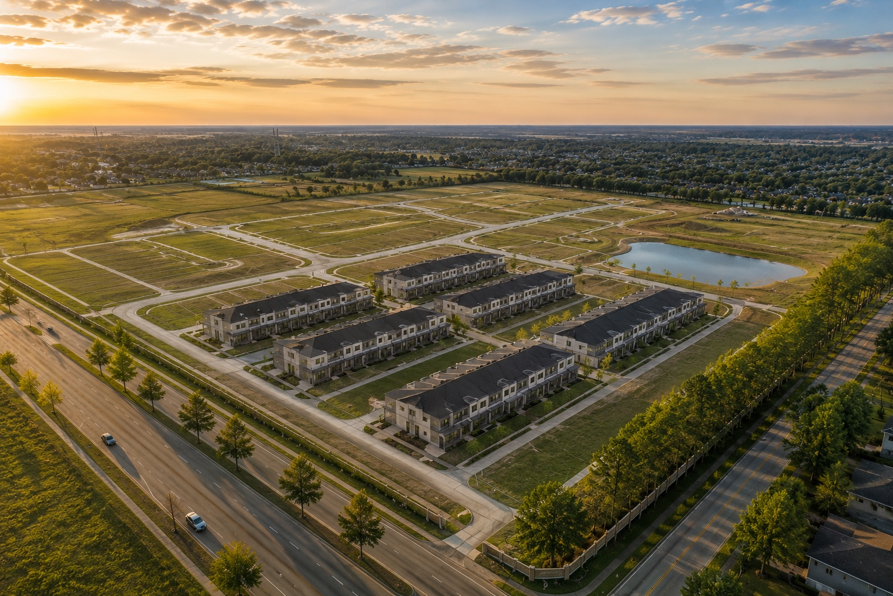

Why Texas. Why Houston.
NorthReach operates from Greater Houston while evaluating opportunities across major Texas markets based on project fundamentals and investor objectives.

A broad, diversified platform for growth.
Population Growth
Large and growing metropolitan areas support sustained demand for housing, services, logistics and commercial space.
Business Environment
Texas combines a business-oriented environment with deep labor pools, infrastructure and corporate investment.
Economic Diversity
Technology, healthcare, energy, manufacturing, defense, education and logistics create multiple demand drivers.
Our primary market and operating base.
Texas opportunities, selected by fundamentals.
Greater Houston
Primary operating market for residential, commercial, industrial and land development.
Dallas–Fort Worth
Large-scale residential, industrial and commercial demand across a multi-city economy.
Austin
Technology-led employment growth, high-value residential demand and constrained infill supply.
San Antonio
Population growth, military and healthcare demand, and attainable residential opportunities.
College Station
University-driven housing demand and long-term regional growth.